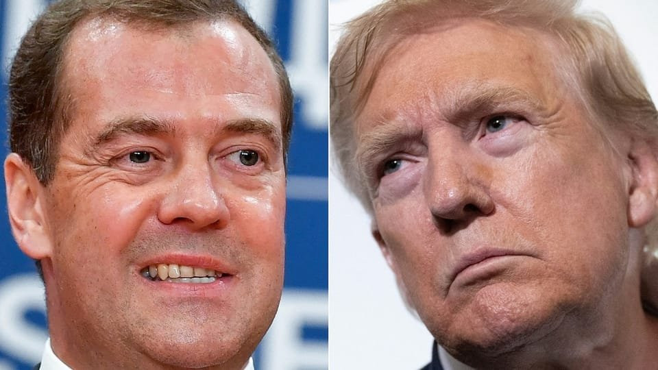

世界苦茶08月02日新闻 | 33条 | 美国就业数据超预期恶化

美国就业数据超预期恶化 | 特朗普解雇劳动统计局局长 | 苏州再现日本人遇袭 | 基辅空袭伤亡人口增加 | 美国向俄罗斯部署核威慑潜艇
每日三條新聞解析
苦茶数据
美元兑人民币：7.21（昨日7.19，前日7.17）
美元兑日元：150.64（昨日148.78，前日148.13）
上证指数：3566（昨日3578，前日3628）
标普500指数：6339（昨日6362，前日6370）
比特币：115499（昨日118304，前日118022）
布伦特原油：72.63（昨日73.24，前日72.65）
中国新闻
• 中韩重启发言人磋商 ：中韩两国时隔九年再举行外交部发言人磋商。据韩联社报道，韩国外交部星期四公布，韩中两国时隔九年重启外交部发言人磋商。韩国外交部发言人李在雄与中国外交部发言人毛宁当天在韩国首尔会面并共进晚餐。
• 娃哈哈遗产案港法院开审 ：中国饮料巨头娃哈哈集团已故创始人宗庆后遗产纠纷案，星期五香港高等法院进行聆讯。现任集团董事长宗馥莉被令暂时不得提取在香港汇丰银行账户的资产。综合香港《星岛日报》《明报》等报道，香港法院去年12月的文件显示，宗馥莉因遗产纠纷案被同父异母的弟妹三人起诉。这三人入禀香港高等法院，要求宗馥莉披露一个香港汇丰银行账户内资产的去向，并申请禁制宗馥莉处理这个账户内的任何资产。三名原告分別为宗继昌、宗婕莉和宗继盛，被告为宗馥莉和建浩创投有限公司。
• 中方驳斥菲防长言论 ：中国驻菲律宾大使馆说，菲防长特奥多罗近日的涉海言论更多出于激化两国矛盾等方面的打算，并敦促有关人士停止不实炒作。据中国官媒人民网报道，中国驻菲律宾使馆发言人星期五应询时说，中国在南中国海问题上的立场和主张是明确的、一贯的，反映在一系列政府声明、白皮书和文件当中。发言人强调，中国在南中国海的领土主权和海洋权益是在长期历史实践中形成的，具有充分的历史和法理依据，符合包括《联合国海洋法公约》在内的国际法和国际实践。只要认真阅读中方立场文件，就不会得出类似于“中方主张断续线内所有水域主权”的奇谈怪论。
• 苏州再现日人遇袭事件 ：日本媒体消息，中国江苏省苏州市星期四再次发生日本母子遇袭事件。母亲在事件中受伤，但无生命危险。日本经济新闻引述中日相关人士透露上述消息。目前，事件经过、袭击者现状以及动机不明。苏州去年6月曾发生一名中国男子持刀袭击日本人学校的校车，造成一对日本母子受伤的事件。中国籍校车乘务员胡友平因阻止行凶者冲上校车而受重伤离世。
• 第四艘075型舰亮相建军节 ：中国第四艘075型两栖攻击舰“湖北舰“星期五即中国建军节当日正式亮相。解放军南部战区海军官方微信公众号“南海舰队”发布建军节专题文章，其中内容显示“海军湖北舰官兵面向军旗庄严宣誓”，表明“湖北舰”已被命名。据央视军事微博消息， 海军湖北舰，舷号34，是中国海军第4艘075型两栖攻击舰。
• 北大取消绩点排名制度 ：中国北京大学将取消绩点排名制度，引发教育界和社会舆论关注，中国官媒业也就此刊文支持校方决定。据《中国青年报》报道，北京大学7月25日发布公告宣布，将从2025年秋季学期起，实施一系列优化本科学生学业评价的重大改革措施。其中，自2025级本科新生起，学生学业评价将全面取消绩点排名，不再在各类本科学业评价中使用绩点作为量化标准。新华社旗下的《新华每日电讯》星期五刊登文章赞同北大此举，并指“绩点焦虑”是一种普遍存在的制度性困境。
• 上半年结婚对数同比增长 ：中国今年上半年有353.9万对情侣登记结婚，同比增加10.9万对。中国民政部官网星期三公布《2025年二季度民政统计数据》显示，2025年上半年结婚登记353.9万对，离婚登记则达133.1万对。据澎湃新闻报道，2024年上半年，全国共办理结婚登记343万对，离婚登记127.4万对。换言之，今年上半年结婚登记数较去年同比增加10.9万对，离婚登记数同比增加5.7万对。
亚太印太新闻
• 联合国警告缅甸多重危机 ：联合国警告，缅甸正同时面临新一轮冲突、致命洪灾与大规模人口流离失所的多重打击。随着暴力升级和通行受限，紧急人道需求难以得到有效满足。联合国秘书长副发言人哈克星期四在纽约的例行记者会上，联合国对针对平民和民用基础设施的空袭等暴力行为表示关切。他强调，有必要保障人道救援工作不受阻碍，并通过和平方式应对当前危机。
• 黄吕锦茹伪造文件案认罪 ：台湾在野的国民党台北党部主委黄吕锦茹涉伪造罢免连署文书案被起诉，这起案件星期五首次开庭，黄吕锦茹改口认罪，获准以1000万元新台币交保。综合台湾《联合报》和ETtoday新闻云等报道，在这起案件开庭前，黄吕锦茹已被羁押禁见98天。她在开庭前递状认罪，还声请具保停止羁押，然后在庭上承认检方起诉的全部犯罪事实。台北地方法院合议庭裁定黄吕锦茹1000万元交保停押，附加限制住居，限制出境、出海八个月，手机与左脚电子脚环监控。与黄吕锦茹同案被羁押禁见的国民党台北市党部书记长初文卿与总干事姚富文也因认罪，各别以200万元新台币交保，附加限制住居，限制出境、出海八个月。
• 泰柬边境冲突引发网络战 ：尽管泰国和柬埔寨已达成停火协议，结束泰柬边境冲突，但网络战仍在持续进行中。这场持续五天的泰柬边境冲突，造成了双方40多人死亡，逾30万人被迫逃离家，一场信息战也随之爆发。法新社报道，泰国政府发言人吉拉育星期三说，近日泰国记录到超过5亿次网络攻击行为。
• 尹锡悦拒绝离开拘留所 ：韩国被罢免的前总统尹锡悦目前在押候审，面临多项刑事调查。韩国特别检察组发言人星期五说，尹锡悦当天在特检组试图让他配合逮捕令并自愿接受讯问时，脱下囚服躺在地板上，拒绝离开拘留所。尹锡悦于今年4月被宪法法院罢免，他在7月10日因涉嫌策划紧急戒严事件中的内乱、滥用职权及外患等罪名而被捕。检察官正就他去年12月短暂宣布戒严案追加指控。尹锡悦已因叛乱罪受审，这项罪名最高可判死刑或无期徒刑。
• 泰柬会谈改址吉隆坡举行 ：马来西亚政府确认，原定在柬埔寨金边召开的泰柬边境联合委员会会议，会根据泰国要求，改在吉隆坡举行。马国政府发言人及通讯部长法米星期五在部门召开例行记者会时说，马国应泰国的要求，同意把泰柬边境联合委员会的开会地点改为吉隆坡，开会日期也从原定的下星期一改为星期二，并由马国国防部协调处理；预备会议则在星期一召开。他说：“今天的内阁会议讨论了泰柬边境问题，也通报了亚细安成员国、美国和中国驻马外交使节及武官出席已更改时间和地点的泰柬边境联合委员会会议。”
• 韩美外长会谈加强合作 ：韩国外交部长赵显星期四在华盛顿同美国国务卿鲁比奥举行会谈。双方确认推进朝鲜完全无核化的共同目标，商定加强韩美日三边合作。韩联社报道，韩国外交部消息，赵显和鲁比奥就韩美同盟、韩美日合作、朝鲜问题及地区局势交换意见。双方强调韩美同盟是朝鲜半岛及地区和平稳定与繁荣的关键支柱，面对复杂多变的地区安全及经济环境，需要实现“同盟现代化”。同盟现代化是指根据地缘政治环境变化和复合型安全威胁，对同盟关系进行优化调整。有不少观点认为，美国希望将原本聚焦于应对朝鲜的韩美同盟职能拓展为牵制中国的战略工具。
科技新闻
• 美议员提案保TikTok运营 ：美国民主党参议员马基星期四提出新的国家安全保障措施，旨在确保TikTok能够继续运营。美国国会去年通过立法，要求中国字节跳动公司在1月19日前剥离TikTok的美国业务，否则将面临禁令，但美国总统特朗普已指示司法部暂不执行这项法律。马基的提案将取消字节跳动出售TikTok美国业务的要求，前提是公司须建立内容透明度规定，并限制外国访问TikTok美国用户数据。
• 英伟达回应芯片无后门 ：刚获得对华出口H20晶片许可的美国科技巨头英伟达被中国官方约谈。英伟达星期五对此回应说，公司晶片不存在后门，也没有远程控制途径。中国国家互联网信息办公室星期四约谈英伟达，就其对华销售的H20算力晶片可能存在漏洞后门安全风险进行说明。综合腾讯科技和钛媒体报道，英伟达星期五对此回应时，否认晶片存在安全漏洞的说法。
• OpenAI完成83亿美元融资 ：知情人士表示，人工智能初创公司OpenAI已融资83亿美元，估值达3000亿美元，这是其今年 400 亿美元融资计划的一部分。知情人士透露，OpenAI年化经常性收入已从六月份的100亿美元跃升至130亿美元，并有望在年底前突破200亿美元。他们还称，ChatGPT的付费企业用户数量实现了爆发式增长，仅数月间即从300万增至500万，ChatGPT的周活跃用户超过7亿。本轮融资提前完成，获得了五倍的超额认购。这一融资进一步凸显了投资者对人工智能平台的浓厚兴趣，尽管各大人工智能模型开发商之间的竞争愈发激烈。
财经新闻
• 美财长称中美有望达协定 ：美国财政部长贝森特相信美国已“具备与中国达成协议的条件”，并对未来前景感到“乐观”。路透社报道，贝森特星期五在一条后来删除的X贴文中写道：“本周在斯德哥尔摩的谈判推进了我们与中国的对话，我相信我们已具备条件达成一项惠及我们两个伟大国家的协议。”他还写道：“我对未来发展前景感到乐观。”
• 美国就业增长显著放缓 ：美国就业增长在过去三个月显著下滑，失业率攀高，显示整体劳动力市场在经济广泛不明朗之际往下滑落。美国政府星期五发布的最新7月份新增非农就业人数达7万3000人，低于市场预期；而之前两个月的数据更是被下修近26万，5月至7月的三个月内平均每月仅新增3万5000份工作，为冠病大流行以来最差的三个月。此外，美国7月份失业率达4.2%，比前一个月升高0.1百分点，显示失业的美国人已更难找到工作，薪资增长也停滞，对消费和商业花费带来下行风险。
• 特朗普解雇劳工局长 ：美国总统特朗普星期五解雇了劳工统计局局长麦克恩塔弗，此前数据显示美国7月份就业增长不及预期，而且前两个月的就业人数被大幅下修。路透社报道，特朗普指责由前总统拜登任命的麦肯塔弗伪造就业数据，没有证据支持特朗普的说法。劳工统计局是美国劳工部的一个下辖机构，负责编制备受关注的就业报告以及消费者和生产者物价数据。 （翻評：經濟數據不好怪統計局，靠換統計局局長來挽救勞動數據，典型的威權邏輯。看美國如何反制這種方法。）
• 特朗普施压美联储主席 ：美国总统特朗普说，如果美联储主席鲍威尔继续拒绝降息，美国联邦储备委员会应当“接管”利率政策，将两人的纷争再次升级。特朗普周五起了个大早，在美东时间清晨不到7时就在自家社媒平台Truth Social贴文，辱骂鲍威尔是“固执的蠢蛋”。特朗普再次要求鲍威尔显著调低利率，“如果他继续拒绝，联邦储备委员会应当接管利率政策，做大家都知道必须做的事！”
• 美加贸易摩擦升级 ：加拿大总理卡尼星期五说，美国总统特朗普决定把对加拿大商品征收的关税从25％调高至35％，加拿大政府对此表示失望，称国家的木材和钢铝业等将受到严重冲击。特朗普此前曾警告，由于卡尼宣布计划在9月份的联合国大会上承认巴勒斯坦国，渥太华将在贸易领域面临后果。特朗普在行政命令中指出，加拿大未能配合美国，遏制持续涌入的芬太尼及其他非法毒品，并且对美方采取的措施进行了反制。
• 柬副相感谢美关税下调 ：柬埔寨副首相孙占托说，由于美国对柬埔寨出口产品征收19%关税，而不是此前宣布的36%关税，对柬埔寨至关重要的服装业和鞋业因此得以避免倒闭。特朗普4月2日公布的关税名单中，柬埔寨被征收的对等关税高达49%，后来下调至36%，为全球面对美国最高关税税率的国家之一。担任柬埔寨首席贸易谈判代表的孙占托星期五接受路透社的电话采访时，向美国总统特朗普表示感谢。
• 泰称美关税下调属重大胜利 ：泰国称美国总统特朗普将泰国的关税税率从早前宣布的36%下调为19%，是一个“重大胜利”。法新社报道，泰国政府发言人吉拉育星期五发表声明说：“这是一项维护泰国出口和长期经济稳定的双赢方案。”美国商务部长卢特尼克日前说，美国已同泰国达成贸易协议，但没有透露详情。当时泰国商务部发言人表示希望泰国的关税税率介于18%至20%之间。
• 第四批以旧换新资金下发 ：中国国家发改委星期五宣布，第四批690亿元人民币消费品以旧换新资金将于10月下达。中国发改委新闻发言人蒋毅星期五在新闻发布会上说，今年第三批690亿元支持消费品以旧换新的超长期特别国债资金已全部下达完毕，并将于10月按计划下达第四批690亿元资金，届时将完成今年3000亿元的资金下达计划。此外，今年“两重”（国家重大战略实施、重点领域安全能力建设）建设项目清单8000亿元已全部下达完毕，中央预算内投资7350亿元已基本下达完毕。
• 美白宫商讨稀土磁铁产量 ：美国白宫上周与顶尖技术与回收公司高管会面，讨论如何快速提高稀土磁铁产量。彭博社星期五报道，要求不具名的知情者透露，美国总统特朗普的贸易顾问纳瓦罗召集了上周的会议，他告诉与会高管，政府正计划大力推动美国的矿产生产，将采用包括对生产商提供最低价格保障在内的激励措施。稀土磁铁也称稀土永磁材料，是一种由稀土元素合金制成的强力永久磁铁，广泛应用于家电、汽车、导弹等，是制造各种高科技和民用产品的关键材料。
• 星巴克筛选中企投资者 ：美国咖啡连锁巨头星巴克据报已就中国业务潜在投资者事宜进行筛选，包括私募股权公司、科技公司在内的十几家企业进入了第二轮。彭博社引述不愿具名的知情人士报道，受邀参与的私募股权公司包括博裕资本、凯雷、殷拓、方源、KKR公司、高瓴、春华。科技巨头京东和腾讯也受邀参与。知情人士称，入围公司将获得星巴克的中国财务信息，让这些企业进行评估并在接下来的几个月为投标做准备。 （翻評：之前不是一直否定要出售？）
俄乌战争
• 特朗普8月1日称其已下令将两艘核潜艇部署在合适的地区，路透社最初报道为靠近俄罗斯的区域，随后更正，以回应此前俄前总统、现联邦安全会议副主席梅德韦杰夫表示俄罗斯拥有核打击能力的威胁言论。
• 俄袭基辅致31人死150伤 ：俄罗斯7月31日对乌克兰首都基辅的袭击已造成31人死亡、150余人受伤。目前救援工作仍在继续。特朗普8月1日下午发帖透露，俄军在7月有近两万名士兵阵亡，今年以来阵亡总数达112500人；乌克兰今年以来有近8000名士兵阵亡，平民死亡人数则少于8000。
• 德国将向乌提供爱国者系统 ：德国星期五说，由于俄罗斯不断对乌克兰展开大规模无人机和导弹袭击，德国将很快向乌克兰运送两套美国制造的爱国者空防导弹系统。德国国防部发声明说，在与美国达成协议后，德国军方将在未来几天内交付更多爱国者导弹发射装置，并将在未来两三个月内提供更多零部件。德国国防部长皮斯托里乌斯说，星期五的声明再次表明，德国是乌克兰在空防领域至今为止最强大的支持者。
• 俄军控制顿涅茨克重镇 ：俄罗斯国防部星期四通报，俄武装部队已控制顿涅茨克地区重镇恰索夫亚尔。俄武装力量军事政治总局副局长阿劳季诺夫说，随着俄军控制恰索夫亚尔，乌军在这一方向上的防御体系已被突破，为俄军下一步行动提供了有力支撑。俄罗斯塔斯社报道，俄军于2024年春末开始向恰索夫亚尔推进。由于地形复杂以及建筑和基础设施独特，恰索夫亚尔一度成为乌克兰武装部队在顿巴斯地区最坚固的防御工事之一。
国际新闻
• 联合国谴责以军杀援民众 ：联合国人权办公室星期五指责以色列军队，杀害数百名在美国支持的粮食物资分发点外等待援助的巴勒斯坦平民。联合国驻巴勒斯坦领土的人权办公室指出，自5月27日以来，有至少1373人在加沙寻求援助时被杀，而仅在过去两天，就有105人被杀。人权办公室说，这些杀戮大多是由以色列军队犯下的。根据办公室的数据，死者当中，有859人死在物资分发点附近，其余514人死在联合国和援助机构车队行进的沿途。
• 德国外长澄清无承认巴国计划 ：德国外长瓦德富尔周五试图淡化他之前的说法，澄清德国并没有计划立即承认巴勒斯坦国。瓦德富尔在出访以色列前说，德国可能以承认巴勒斯坦国，以回应以色列在加沙地带采取的任何单方面行动，引来以色列官员强烈反弹。极右翼的以色列国家安全部长本格维尔在社媒平台X发文称：“在纳粹大屠杀的80年后，德国恢复支持纳粹主义。”
• 特朗普拟建白宫宴会厅 ：美国总统特朗普准备在白宫打造一座大型的宴会厅来举办官方接待活动，这将是白宫一个多世纪来最大规模的建筑工程之一。白宫新闻秘书莱维特在星期四的新闻发布会上说，这项工程的2亿美元建设费用将由特朗普和其他金主提供。美国历任总统过去曾使用私密的国宴厅举办活动，也以面积更大的东厅接待更多贵宾，有时还会在南草坪临时搭建帐篷以举办大型晚宴。